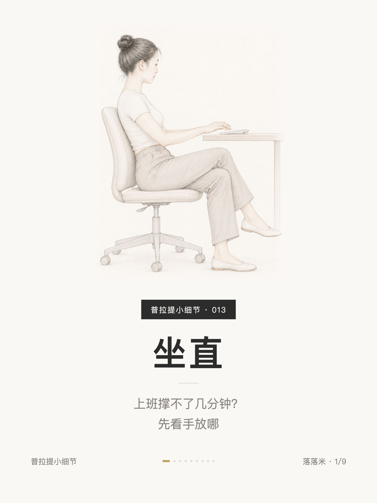
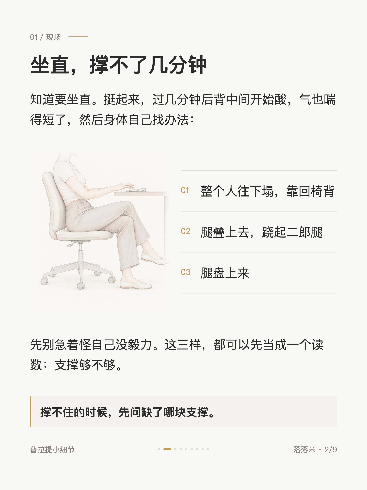
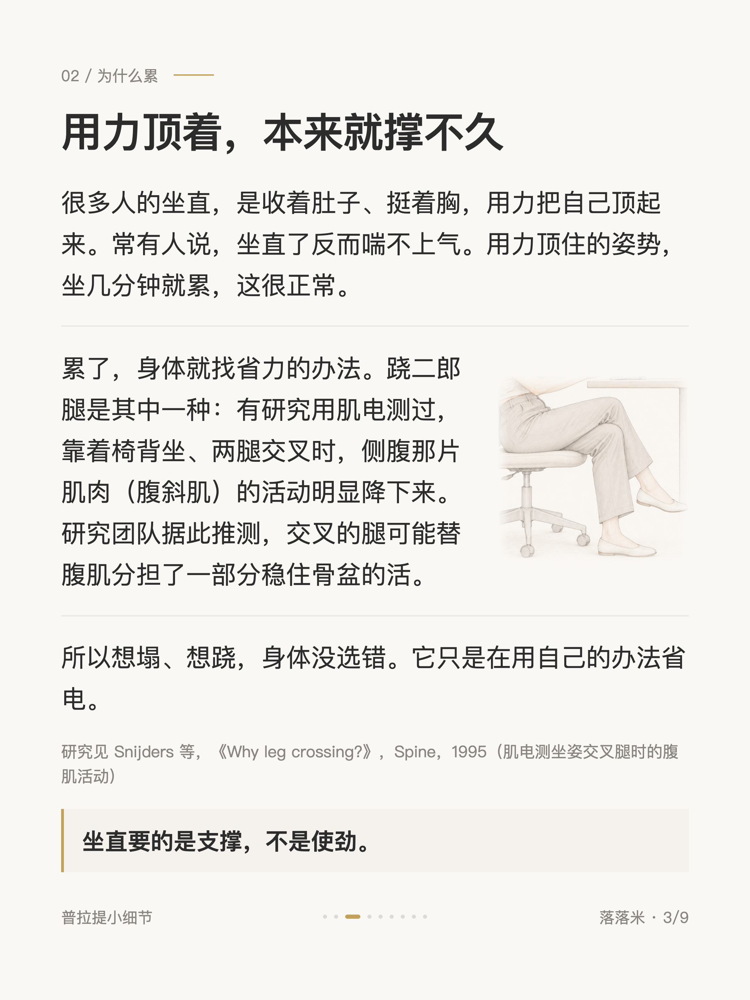
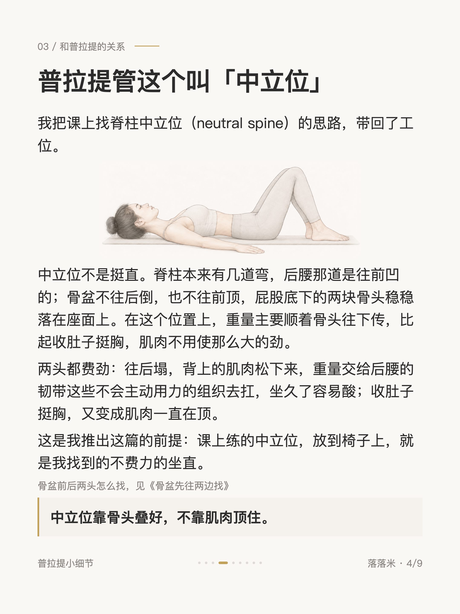
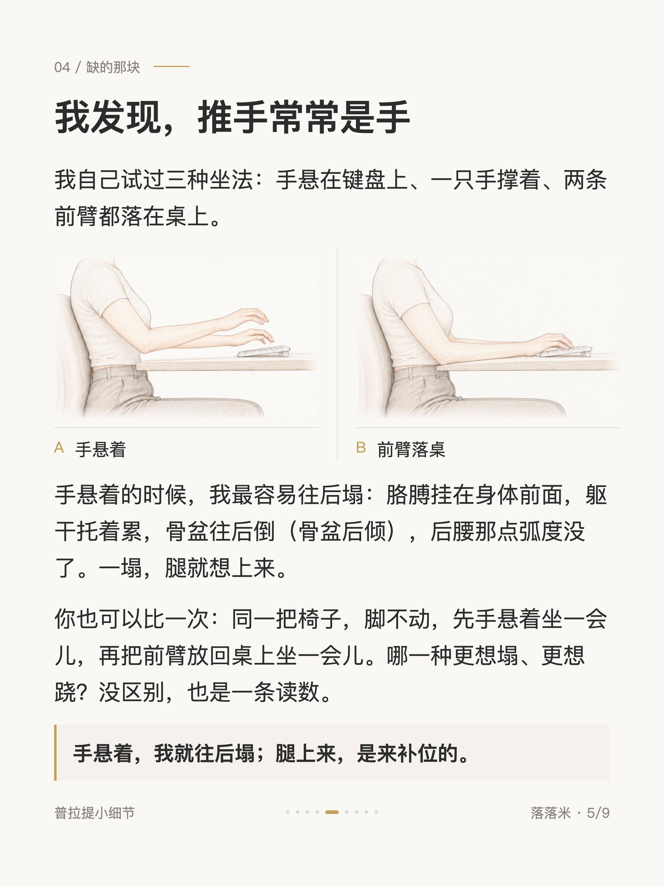
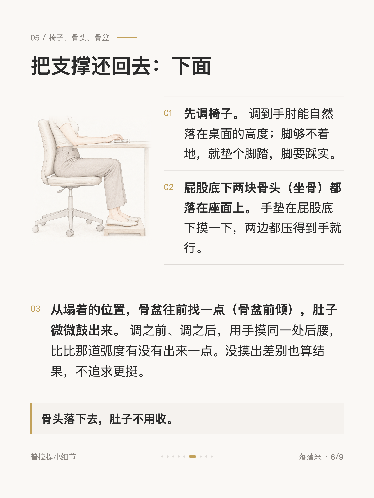
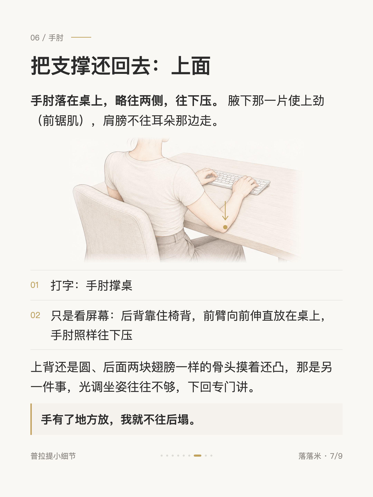
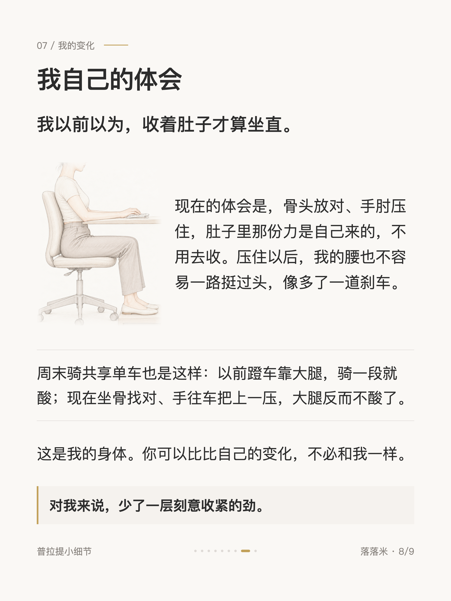
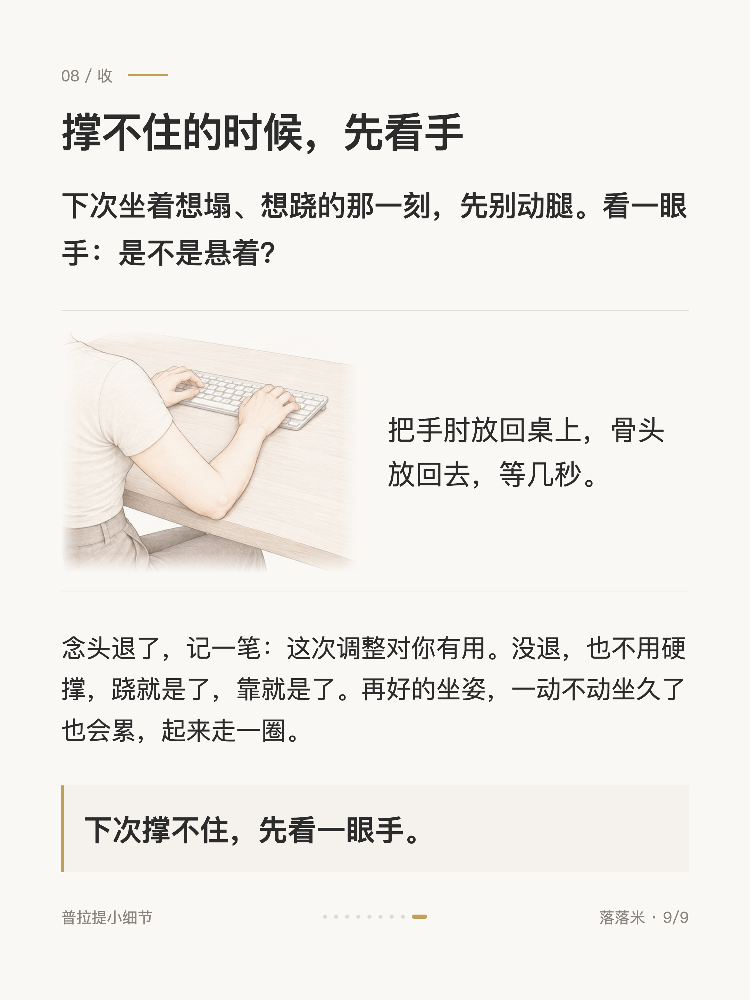

普拉提小细节 #013
上班坐直很累？普拉提先看你的手放哪

1 / 9

2 / 9

3 / 9

4 / 9

5 / 9

6 / 9

7 / 9

8 / 9

9 / 9
← 左右滑动浏览全部卡片 →
坐直这件事，很多人是收着肚子、挺着胸，用力顶起来的。几分钟就累，然后塌下去，或者腿叠上去。
我自己留意到，撑不住的那一刻，我的手常常是悬着的：胳膊挂在身体前面，躯干托着累，人往后塌，腿就上来补位。
把手肘放回桌上，略往两侧，往下压，腋下那一片使上劲（前锯肌），肩膀别往耳朵走。对我来说，这一压把背托住了，肚子不用再去收。
坐直要的是支撑，不是使劲。下次撑不住，先看一眼手。